第 7 章：箭图表示
设 \(\Gamma\) 是以 \(I=\left\{1,2,\cdots,N\right\}\) 为顶点，\(E\) 为边的图。本节中约定 \(\Gamma\) 是联通的，且不含自环。
§ 01Gabriel 定理
定义 1.1
定义其伴随矩阵(adjacency matrix) \(R_\Gamma:=(r_{ij})\)，其中 \(r_{ij}\) 为 \(i\) 与 \(j\) 的连边数。
定义 1.2
\(\Gamma\) 称为Dynkin 图，若 \(A_\Gamma:=2\mathrm{Id}-R_\Gamma\) 是正定的。
定理 1.3
\(\Gamma\) 是 Dynkin 图当且仅当形如下述图之一：
-
\(A_N\)：
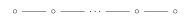
Fig. 1交换图 -
\(D_N(N\ge 4)\)：
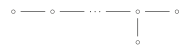
Fig. 2交换图 -
\(E_6\)：
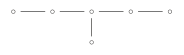
Fig. 3交换图 -
\(E_7\)：
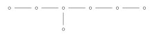
Fig. 4交换图 -
\(E_8\)：
Fig. 5交换图
注：一个单边仿射(simply laced affine) Dynkin 图是一个连通且无自环的图，若\(A_\Gamma\)是半正定的。它们形如：
-
\(\widehat{A_N}\)：
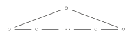
Fig. 6交换图 -
\(\widehat{D_N}\)：
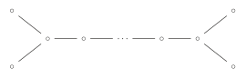
Fig. 7交换图 -
\(\widehat{E_6}\)：
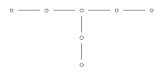
Fig. 8交换图 -
\(\widehat{E_7}\)：
Fig. 9交换图
-
\(\widehat{E_8}\)：
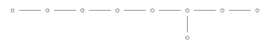
Fig. 10交换图
回忆箭图 \(Q\) 的表示为 \(V=((V_i)_{i\in I},(x_h)_{h\in E})\)，其中 \(h:h'\rightarrow h''\) 为 \(Q\) 的边，\(x_h:V_{h'}\rightarrow V_{h''}\) 为线性映射。
定义 1.4
对任意 \(i\in I\)，如下定义表示 \(S(i)\)：取 \(x_h=0\)，
容易验证 \(S(i)\) 是一个表示，且 \(i\neq j\) 时 \(S_i\ncong S_j\)。
定理 1.5
设 \(Q\) 无有向圈，则 \(\left\{S(i)\Big| i\in I\right\}\) 为所有 \(Q\) 的不可约表示。
证明
令 \(V\) 为 \(Q\) 的表示，设 \(I':=\left\{i\in I\Big| V_i\neq 0\right\}\)，则存在 \(i\in I'\) 使得 \(\forall j\in I'\) 不存在边 \(i\rightarrow j\)，于是 \(\dim V_i\cdot S(i)\subset V\)。
定义 1.6
对任意 \(Q\) 的表示 \(V\)，定义其维数向量(dimension vector) 为
定义 1.7
对任意 \(v\in \mathbb{Z}_{\ge 0}^I\)，令
为由 \(v\) 生成的 \(Q\) 的表示空间。定义
自然作用于 \(\mathrm{Rep} (Q,v)\) 上。
则我们有 \(\dim v\) 的同构类一一对应于 \(\mathrm{Rep} (Q,v)\) 的 \(\mathrm{GL}(v)-\)轨道。
定义 1.8
一个箭图 \(Q\) 称为有限型(finite type)，当且仅当其不可分解表示的同构类数目是有限的。
反例：Jordan 箭图
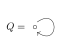
Fig. 11交换图，不可约表示为 \((\mathbb{C}^d,J_\lambda)\)，其中 \(J_\lambda=\left( \begin{matrix} \lambda& 1& & \\ & \lambda& \ddots& \\ & & \ddots& 1\\ & & & \lambda\\ \end{matrix} \right) ,\lambda\in \mathbb{C}\)
定理 1.9Gabriel
连通箭图 \(Q\) 是有限型当且仅当其对应的无向图 \(\Gamma\) 是 Dynkin 图。进一步我们有不可分解表示与和 \(\Gamma\) 对应的的正根一一对应。
idea
设 \(Q\) 的任一表示 \(V\) 均为不可分解表示的直和。根据 \(\mathrm{GL}(V)-\)作用，\(\dim v\) 的同构类一一对应于 \(\mathrm{Rep} (Q,v)\) 的 \(\mathrm{GL}(v)-\)轨道。
因此，若\(Q\)是有限型，则\(\mathrm{Rep}(Q,v)\)上仅有有限个 \(GL(v)-\)轨道。进一步利用存在轨道 \(O_V\) 满足：
另一方面，\(O_V = {\mathrm{GL}(V)}/{\mathrm{Stab}(V)}\)，且 \(\mathbb{C}^k \subseteq\mathrm{Stab}(v)\) 可得：
即
这表明 \(A_p\) 是正定矩阵。
另一个方向的证明我们将通过反射函子得到。
§ 02一些例子
我们给出如下记号：
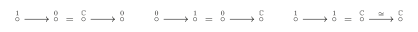
Fig. 12交换图令 \(\mathrm{Ind}(Q)=\left\{Q \text{ 的不可分解的同构类}\right\}\)
例 2.1例
Fig. 13交换图
，\(\mathrm{Ind}(Q)=\left\{\mathbb{C}\right\}\)。
例 2.2例
Fig. 14交换图
，注意到 \(V\stackrel{A}{\longrightarrow}W =(\ker A\longrightarrow 0)\oplus (V'\xrightarrow{\sim} \mathrm{Im} A)\oplus (0\stackrel{0}{\longrightarrow}W')\)，其中 \(V'\) 为 \(\ker A\) 在 \(V\) 的补空间，\(W'\) 为 \(\mathrm{Im} A\) 在 \(W\) 的补空间，故 \(\mathrm{Ind}(Q)=\left\{1\rightarrow 0,0\rightarrow 1,1\rightarrow 1\right\}\)
例 2.3例
\(A_3\) 有两种情况需要讨论
-
{ loading=lazy }
我们有 $\ker A\rightarrow 0\rightarrow 0$，$0\rightarrow 0\rightarrow Y'$，这里 $Y'$ 是 $\mathrm{Im}B$ 在 $Y$ 的补空间。于是我们有
$$
V\stackrel{A}{\hookrightarrow} W \stackrel{B}{\twoheadrightarrow }Y
$$
设 $X:=\ker(B\circ A),V=X\oplus X',W=A(X)\oplus W'$ 使得 $A(X')\subset W'$。则
$$
V\stackrel{A}{\hookrightarrow} W \stackrel{B}{\twoheadrightarrow }Y=(X\stackrel{A}{\hookrightarrow} A(x) \rightarrow 0)\oplus (X'\stackrel{A}{\hookrightarrow} W' \stackrel{B}{\twoheadrightarrow }Y)
$$
前者$=\dim X(1\to 1 \to 0)$，于是我们化归到了 $V\stackrel{A}{\hookrightarrow} W \stackrel{B}{\twoheadrightarrow }Y,\ker(B\circ A)=0$ 的情形。
令 $X=B\circ A(V),Y=X\oplus X'$，令 $W'$ 为 $X'$ 的原像$\subset W$。则 $W=A(V)\oplus W'$ 且
$$
V\stackrel{A}{\hookrightarrow} W \stackrel{B}{\twoheadrightarrow }Y=
\left( V\xrightarrow{\sim }A\left( V \right) \xrightarrow{\sim}X \right) \oplus \left( 0\rightarrow W'\stackrel{B}{\twoheadrightarrow } X' \right)
$$
后者由 $0\to 1\to 1$ 与 $0\to 1 \to 0$ 构成。故
$$
\mathrm{Ind}(Q)=\left\{\begin{aligned}
1\to 0\to 0,0\to 0\to 1,1\to 1\to 0\\
1\to 1\to 1,0\to 1\to 1,0\to 1\to 0\\
\end{aligned}\right\}
$$
-
{ loading=lazy }
同上，我们可以拿掉 $\ker A\to 0\leftarrow 0$ 与 $0\to 0 \leftarrow \ker B$，得到
$$
V\stackrel{A}{\hookrightarrow} W \stackrel{B}{\hookleftarrow }Y
$$
设 $W'=V\cap Y,V'=W'\cap V,Y'=W'\cap Y$。则我们可以分离出
$$
V'\xrightarrow{\sim }W'\xleftarrow{\sim}Y'
$$
于是我们归化到了 $V\stackrel{A}{\hookrightarrow} W \stackrel{B}{\hookleftarrow }Y,V\cap Y=0$ 的情形。令 $W=V\oplus Y\oplus W'$，则
$$
V\stackrel{A}{\hookrightarrow} W \stackrel{B}{\hookleftarrow }Y=(V\stackrel{\sim}{\rightarrow} V \leftarrow 0)\oplus (0\to W'\leftarrow 0)\oplus (0\to Y\stackrel{\sim}{\leftarrow}Y)
$$
故
$$
\mathrm{Ind}(Q)=\left\{\begin{aligned}
1\to 0\leftarrow 0,0\to 0\leftarrow 1,1\to 1\leftarrow 1\\
1\to 1\leftarrow 0,0\to 1\leftarrow 0,0\to 1\leftarrow 1\\
\end{aligned}\right\}
$$
§ 03根
从现在开始 \(\Gamma\) 形如 \(A_n,D_n,E_6,E_7,E_8\) 中一者。\(R_\Gamma=(r_{ij})_{1\le i,j\le n}\) 为伴随矩阵。
在格点 \(\mathbb{Z}^n\) 或 \(\mathbb{R}^n\) 上定义内积
其中 \(A_\Gamma:=2\mathrm{Id} -R_\Gamma\) 为 \(\Gamma\) 的 Cartan 矩阵。
引理 3.1
- \(B\) 是正定的。
- \(\forall x\in \mathbb{Z}^n,B(x,x)\in 2\mathbb{Z}\)。
证明
\((1)\)：由于 \(\Gamma\) 是 Dynkin 图，故 \(B\) 正定。
\((2)\)：由定义
定义 3.2
关于某个正定内积的根(root)是 \(\mathbb{Z}^n\) 中相对于该内积长度最短的非零向量。
故对内积 \(B\)，我们有 roots \(=\left\{x\in \mathbb{Z}^n\Big| B(x,x)=2\right\}\)，特别的 \(\#\)roots\(<+\infty\)。
定义 3.3
称 \(\alpha_i=(0,\cdots,0,1,0,\cdots,0)\) 为单根(simple root)。
引理 3.4
设 \(\alpha\) 为根，\(\alpha=\sum_i k_i\alpha_i\)，则所有的 \(k_i\) 均非正或均非负。
证明
假设结论不成立，即存在某 \(k_i > 0\) 和某 \(k_j < 0\) 。不妨进一步假设在 \(i\) 与 \(j\) 之间的所有下标 \(s\) 满足 \(k_s = 0\)。将顶点 \(i,j\) 与图 \(\Gamma\) 的顶点对应：
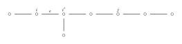
Fig. 15交换图令 \(\epsilon\) 为连接 \(i\) 与其向 \(j\) 方向相邻顶点的边，\(i'\) 为 \(\epsilon\) 的另一端点。通过移除边 \(\epsilon\) 将图 \(\Gamma\) 分割为子图 \(\Gamma_1\) 和 \(\Gamma_2\)。由于 \(\Gamma\) 是Dynkin图（无环且无圈），\(\Gamma_1\) 与 \(\Gamma_2\) 均为连通子图且彼此不连通：
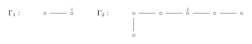
Fig. 16交换图此时 \(i \in \Gamma_1\)，\(j \in \Gamma_2\)。定义：
则有 \(\alpha = \beta + \gamma\)。由于 \(k_i > 0\) 且 \(k_j < 0\)，可知 \(\beta \neq 0\)，\(\gamma \neq 0\)，因此：
进一步，由于\(\Gamma_1\)与\(\Gamma_2\)仅在边\(\epsilon\)处相连，其双线性形式满足：
由于\(k_i > 0\)且\(k_{i'} \leq 0\)（由\(\gamma\)的构造），可得\(B(\beta, \gamma) \geq 0\)。于是：
但这与\(\alpha\)是根矛盾。
定义 3.5
对根 \(\alpha=\sum k_i\alpha_i\)，称 \(\alpha\) 是正(负)根，若 \(k_i\) 均非负(均非正)。
于是所有根要么是正根要么是负根。令 \(R^+\) 为所有正根构成的集合。
例 3.6例
-
设\(\Gamma=A_{N-1}\)。格\(L = \mathbb{Z}^{N-1}\)可视为格\(\mathbb{Z}^N\)的子群，其定义为所有满足
\[ \sum_{i=1}^N x_i = 0 \]的向量\((x_1, \ldots, x_N)\)构成的子群，即\(L \subseteq \mathbb{Z}^N\)。向量组
\[ \begin{aligned} \alpha_1 &= (1, -1, 0, \ldots, 0), \\ \alpha_2 &= (0, 1, -1, 0, \ldots, 0), \\ &\vdots \\ \alpha_{N-1} &= (0, \ldots, 0, 1, -1) \end{aligned} \]自然构成\(L\)的一组基。进一步，\(\mathbb{Z}^N\)上的标准内积\((x, y) = \sum x_i y_i\)限制在\(L\)上时，与由\(\Gamma\)定义的内积\(B\)一致，因为它们在基向量上的取值相同：
\[ (\alpha_i, \alpha_j) = \begin{cases} 2, & i = j, \\ -1, & i, j \text{ 相邻}, \\ 0, & \text{otherwise}. \end{cases} \]由此可知，形如
\[ (0, \ldots, 0, 1, 0, \ldots, 0, -1, 0, \ldots, 0) = \alpha_i + \alpha_{i+1} + \cdots + \alpha_{j-1} \]及
\[ (0, \ldots, 0, -1, 0, \ldots, 0, 1, 0, \ldots, 0) = -(\alpha_i + \alpha_{i+1} + \cdots + \alpha_{j-1}) \]的向量均为\(L\)的根。因此，\(L\)中正根的数量为 \(\frac{N(N-1)}{2}\)
-
作为补充，我们列出其他 Dynkin 图的正根数量：
\[ D_N:N(N-1)\qquad E_6:36\qquad E_7:63\qquad E_8:120 \]
定义 3.7
设 \(\alpha\in \mathbb{Z}^n\) 是根，反射(reflection) \(s_\alpha\) 定义为
注：
- 设 \(H_\alpha\subset \mathbb{R}^n\) 为与 \(\alpha\) 垂直的超平面，则 \(H_\alpha\) 在 \(s_\alpha\) 作用下不变，且 \(Ss_\alpha(\alpha)=-\alpha\)。于是 \(s_\alpha\) 是对 \(H_\alpha\) 的反射，且 \(B(x,x)=B(s_\alpha(x),s_\alpha(x))\)。
- 对每个 \(i\)，定义 \(s_i:=s_{\alpha_i}\) 称为简单反射(simple reflection)，Weyl 群 \(W\) 定义为由 \(s_i\) 生成的 \(O(\mathbb{R}^n)\) 的子群。
- 对任意 \(w\in W\)，\(w(\alpha_i)\) 是根。更进一步我们有任意根均形如 \(w(\alpha_i)\)。
- 由 \(\#\)roots\(<+\infty\) 知 \(W\) 是有限群。
§ 04Gabriel 定理
回忆箭图表示 \(V\) 的维数向量为
定理 4.1
\(Q\) 形如 \(A_n,D_n,E_6,E_7,E_8\) 中一者，则 \(Q\) 有有限多个不可分解表示。且
是双射，其中 \(R^+(Q)\) 是 \(Q\) 对应的正根。
§ 05反射函子
定义 5.1
设 \(Q\) 为箭图，称一个点 \(i\in I\) 为汇点(sink)/源点(source)，如果所有包含 \(i\) 的边均指向/指出 \(i\)。
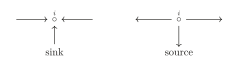
Fig. 17交换图定义 5.2
设 \(Q\) 为任意箭图，且 \(i \in Q\) 为汇点或源点。则定义 \(\overline{Q_i}\) 为 \(Q\) 通过反转所有包含 \(i\) 的有向边得到的箭图。
定义 5.3反射函子
-
设 \(Q\) 为箭图，且 \(i \in Q\) 为汇点。设 \(V\) 是 \(Q\) 的一个表示。定义
\[ F_i^+ : \text{Rep}\, Q \to \text{Rep}\, \overline{Q_i} \]其中：
\[ F_i^+(V)_k =\begin{cases} V_k &, k \neq i\\ \ker \left( \varphi : \bigoplus_{j \to i} V_j \to V_i \right) &, k=i\\ \end{cases} \]对任意的边 \(j\xrightarrow{h} k\)，若 \(k\neq i\)，\(x_h:V_j\rightarrow V_k\) 保持不变。若 \(k=i\)，将 \(x_h\) 变为
\[ F_i^+(V)_i=\ker \varphi \hookrightarrow \bigoplus_{j \to i} V_j \to V_i \] -
设 \(Q\) 为箭图，且 \(i \in Q\) 为源点。设 \(V\) 是 \(Q\) 的一个表示。定义
\[ F_i^- : \text{Rep}\, Q \to \text{Rep}\, \overline{Q_i} \]其中：
\[ F_i^-(V)_k =\begin{cases} V_k &, k \neq i\\ \mathrm{coker} \left( \psi : \bigoplus_{j \to i} V_j \to V_i \right) &, k=i\\ \end{cases} \]对任意的边 \(j\xrightarrow{h} k\)，若 \(k\neq i\)，\(x_h:V_j\rightarrow V_k\) 保持不变。若 \(k=i\)，将 \(x_h\) 变为
\[ F_i^-(V)_i=\bigoplus_{j \to i} V_j\to \bigoplus_{j \to i} V_j/\mathrm{Im}(\psi) \]
例 5.4例
考虑
Fig. 18交换图
，则
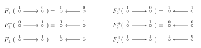
Fig. 19交换图例 5.5例
- 若 \(i\) 是汇点，则 \(F_i^+(S(i))=0\)。
- 若 \(i\) 是源点，则 \(F_i^-(S(i))=0\)。
命题 5.6
设 \(V\in \mathrm{Ind}(Q)\)。
- 设 \(i\) 是汇点，则要么 \(V=S(i)\)，要么 \(\varphi:\bigoplus_{j\to i} V_j\rightarrow V_i\) 是满射。
- 设 \(i\) 是源点，则要么 \(V=S(i)\)，要么 \(\psi:V_i \rightarrow \bigoplus_{i\to j} V_j\) 是单射。
证明
\((1)\)：我们有分解 \(V_i=\mathrm{Im}\varphi\otimes W\)，则
其中 \(V'\) 是通过将 \(V\) 中的 \(V_i\) 替换为 \(\operatorname{Im} \varphi\) 而得到的空间。若 \(V\in \mathrm{Ind}(Q)\)，则要么 \(V\cong S(i)\)，要么 \(\varphi\) 是满射。
\((2)\) 同理。
命题 5.7
设 \(V\in \mathrm{Rep}(Q)\)。
-
设 \(i\) 是汇点，\(\varphi:\bigoplus_{j\to i} V_j\rightarrow V_i\) 是满射，则
\[ F_i^-F_i^+(V)\cong V\qquad \dim (F_i^+V)=S_i(\dim V) \] -
设 \(i\) 是源点，\(\psi:V_i \rightarrow \bigoplus_{i\to j} V_j\) 是单射，则
\[ F_i^+F_i^-(V)\cong V\qquad \dim (F_i^-V)=S_i(\dim V) \]
证明
设 \(K=\ker (\varphi:\bigoplus_{j\to i} V_j\rightarrow V_i)=(F_i^+(V))_i\)，于是
由定义
故 \(\dim F_i^+(V)=\dim V-B(\dim V,\alpha_i)\alpha_i=S_i(\dim V)\)。
定义 5.8
对 \(v\in \mathbb{Z}^n\)，我们称 \(v\ge 0\) 当且仅当 \(v_i\ge 0,\forall 1\le i\le n\)。
推论 5.9
对 \(V\in \mathrm{Ind}(Q)\)，若 \(i\) 是汇点/源点，则 \(F_i^+(V)/F_i^-(V)\) 要么是 0 要么是不可分解的。且前者等价于 \(V\cong S(i)\)，后者等价于 \(S_i(\dim V)\ge 0\)。
在后者情形中，\(\dim F_i^{\pm}(V)=S_i(\dim V)\) 且 \(V\cong F_i^-F_i^+(V)/V\cong F_i^+F_i^-(V)\)。
§ 06Coxeter 元
定义 6.1
给 \(Q\) 引入一个固定标记 \(1, \ldots, n\)，则 \(c:=S_1S_2\cdots S_n\in W\) 称为 Coxeter 元。
引理 6.2
令 \(\beta=\sum_i k_i\alpha_i\neq 0\)，其中 \(k_i\ge 0,\forall i\)，则 \(\exists N\in \mathbb{N}\) 使得 \(c^N\beta\) 存在至少一个负常数。
证明
Coxeter 元 \(c\) 属于有限群 \(W\)，故存在 \(M \in \mathbb{N}\) 使得\(c^M = 1\)。我们断言：作为 \(\mathbb{R}^n\) 上的算子，有
此式蕴含所需结论——因为 \(\beta\) 至少有一个严格正系数，故以下元素中必存在至少一个含严格负系数：
进一步，只需证明 \(1\) 不是 \(c\) 的特征值。原因如下：若存在向量满足
则有
假设结论不成立，即 \(1\) 是 \(c\) 的特征值。设 \(v\) 为对应特征向量：
由于 \(s_i\) 仅改变 \(v\) 的第 \(i\) 个坐标，可得
重复此过程，对所有 \(i\) 得到
这意味着对所有 \(i\) 有
因 \(B\) 是非退化的，故 \(v = 0\)。但 \(v\) 是特征向量，矛盾。
§ 07Gabriel 定理的证明
设 \(V\) 是箭图 \(Q\) 的一个不可分解表示。我们给 \(Q\) 引入一个固定标记 \(1, \ldots, n\)，使得若从 \(i\) 可达 \(j\) 则满足 \(i < j\)。这种标记是可行的——我们可以将最高标签赋给任意汇点，从箭图中移除此汇点，再将次高标签赋给剩余箭图的汇点，依此类推。如此便构造出所需的标记。
现考虑序列
该序列良定义性源于所选标记：\(n\) 必是 \(Q\) 的汇点，\(n-1\) 必是 \(Q_n\) 的汇点（其中 \(Q_n\) 是通过反转 \(Q\) 在顶点 \(r\) 的所有箭头所得），以此类推。进一步注意到 \(V^{(n)}\) 重新成为 \(Q\) 的表示，因为每条箭头均被反转两次（因我们对每个顶点都应用了反射函子）。这意味着可定义
并将序列无限延伸。
命题 7.1
存在 \(m\in \mathbb{N}\) 使得
对某个单根成立。
下面我们来证明 Gabriel 定理： \(Q\) 形如 \(A,D,E\)，则下映射为双射
我们分三步证明。
推论 7.2
推论 7.3
\(V,V'\in \mathrm{Ind}(Q),\dim V=\dim V'\)，则 \(V\cong V'\)。
推论 7.4
\(\forall \alpha\in R^+(Q)\)，存在 \(V\in \mathrm{Ind}(Q)\)，使得 \(\dim V=\alpha\)。
例 7.5例
考虑 \(Q=D_4\)。
评论